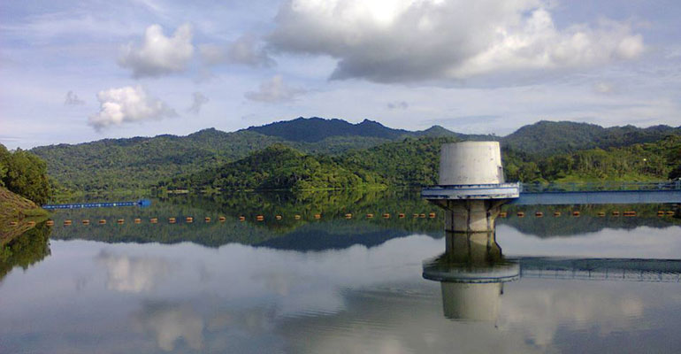

Taukah Anda Tentang Waduk Sermo?
Waduk yang diresmikan oleh Presiden Soeharto 20 November 1996 silam dibuat dengan membendung Kali Ngrancah, dengan biaya pembangunan mencapai Rp 22 miliar dan diselesaikan dalam waktu dua tahun delapan bulan. Untuk pembangunan waduk ini, Pemda Kulon Progo melakukan transmigrasi massal alias bedol desa. Sebanyak 100 KK ditransmigrasikan ke Tak Toi Bengkulu dan 7 KK ditransmigrasikan ke Perkebunan Inti Rakyat (PIR) Kelapa Sawit Riau. Tujuan pembangunan waduk ini adalah untuk suplesi sistem irigasi daerah Kalibawang yang memiliki cakupan areal seluas 7.152 Ha. Sistem irigasi tersebut merupakan interkoneksi dari beberapa daerah irigasi.
Baca Selengkapnya
Pembahasan Jauh Tentang Waduk Sermo
Waduk Sermo ini terdiri dari bendungan utama yang merupakan tipe urugan batu berzona dengan inti kedap air. Puncak bendungan memiliki elevasi +141,60 meter dengan panjang 190.00 meter, lebar 8,00 meter, tinggi max 58,60 Meter dan volume urugan 568,000 meter. Coffer dam dengan tipe urugan batu dan selimut kedap air yang memiliki elevasi mercu >105,00 meter. Bangunan pelimpah dengan tipe "ogee" tanpa pintu yang memiliki lebar pelimpah 26 meter, elevasi mercu 136,60 meter, peredam energi bak lontar dan lantai peredam energi. Bangunan terowongan dengan bentuk tapal kuda dengan diameter 4,2 meter yang memiliki kapasitas 179,50 meter kubik per detik, elevasi inlet 89,00 meter dan elevasi outlet 84,00 meter. Selama ini Waduk Sermo dimanfaatkan sebagai sumber air bersih oleh Perusahaan Daerah Air Minum (PDAM) dan untuk air irigasi yang mengairi sawah di daerah Wates dan sekitarnya. Terkadang lokasi Waduk digunakan untuk lomba dayung seperti yang terjadi belakangan ini dan untuk pelatihan bagi Akademi Angkatan Udara (AAU), juga sering dijadikan objek diskusi akademika tentang evaluasi geologi teknik dan kerentanan gerakan tanah di sekitar waduk tersebut (terutama pada sandaran dinding bendungan sebelah barat/kanan)